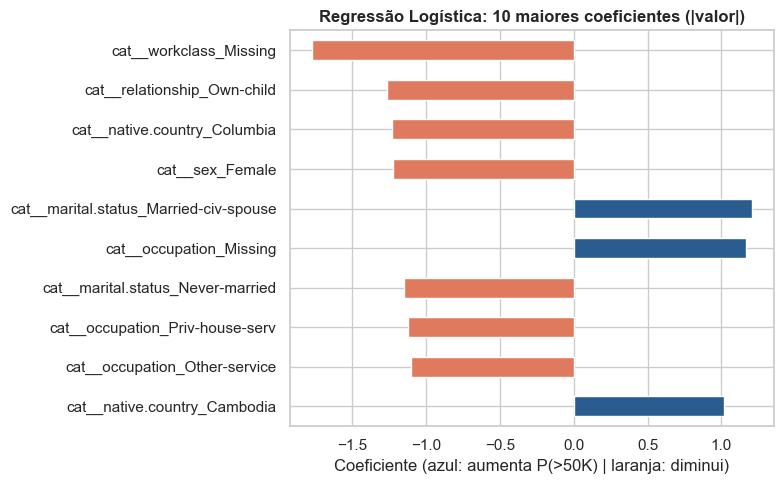
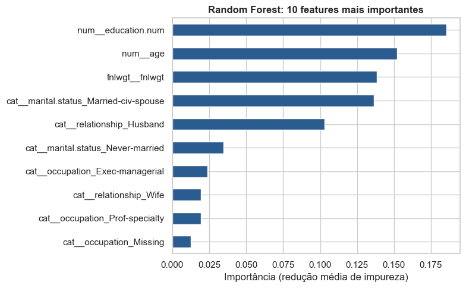
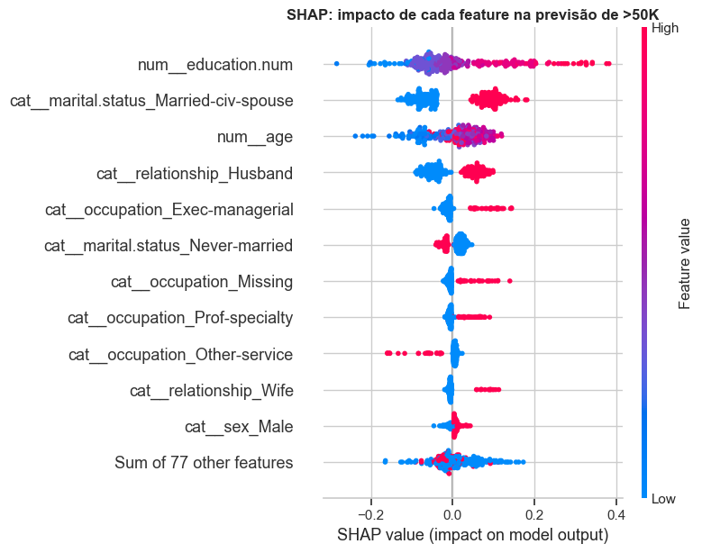
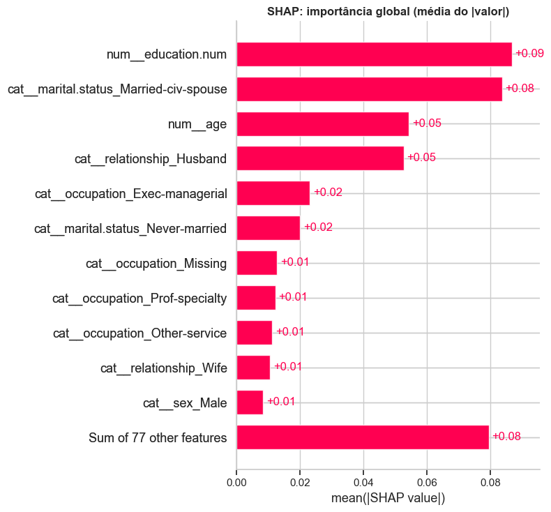
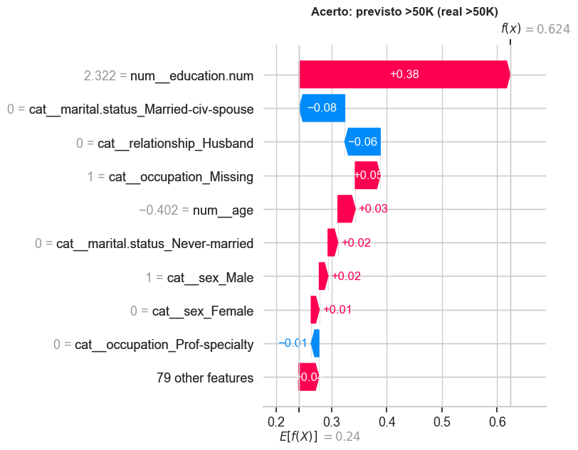
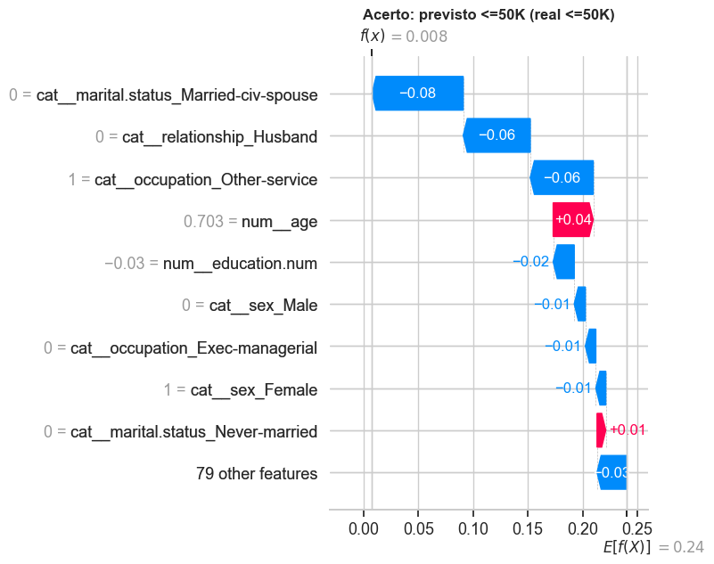
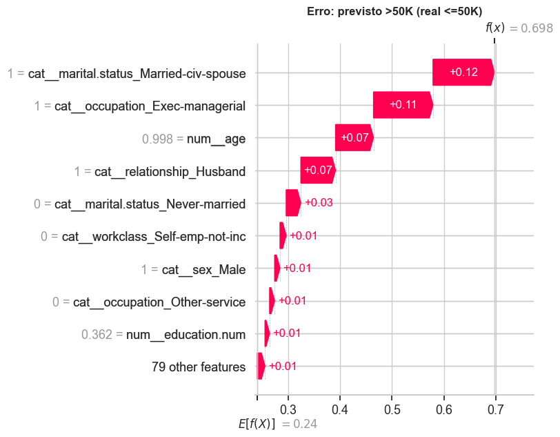

3. Interpretação e explicabilidade¶
3.1 Modelo linear: 3 maiores coeficientes¶
Usamos a Regressão Logística otimizada da Seção 1.2. Coeficiente positivo → aumenta a chance de >50K; negativo → diminui. Ressalva: as variáveis numéricas estão padronizadas e as categóricas são dummies 0/1, então a comparação direta de magnitudes é aproximada.
Ver código
lr_est = gs_lr.best_estimator_
nomes_lr = lr_est.named_steps["prep"].get_feature_names_out()
coefs = pd.Series(lr_est.named_steps["model"].coef_[0], index=nomes_lr)
top_coef = coefs.reindex(coefs.abs().sort_values(ascending=False).index)
display(top_coef.head(10).rename("coeficiente").to_frame())
plt.figure(figsize=(8, 5))
top_coef.head(10)[::-1].plot(kind="barh", color=["#2b5c8f" if v > 0 else "#e07a5f" for v in top_coef.head(10)[::-1]])
plt.title("Regressão Logística: 10 maiores coeficientes (|valor|)", fontweight="bold")
plt.xlabel("Coeficiente (azul: aumenta P(>50K) | laranja: diminui)")
plt.tight_layout()
plt.show()
| coeficiente | |
|---|---|
| cat__workclass_Missing | -1.7752 |
| cat__relationship_Own-child | -1.2661 |
| cat__native.country_Columbia | -1.2353 |
| cat__sex_Female | -1.2248 |
| cat__marital.status_Married-civ-spouse | 1.2076 |
| cat__occupation_Missing | 1.1653 |
| cat__marital.status_Never-married | -1.1536 |
| cat__occupation_Priv-house-serv | -1.1260 |
| cat__occupation_Other-service | -1.1055 |
| cat__native.country_Cambodia | 1.0168 |

Ver código
# Diagnóstico da coluna occupation: "?" e o valor-lixo "occupation" viram NaN juntos. São grupos diferentes?
tipo_occ = X_train["occupation"].where(X_train["occupation"].isin(["?", "occupation"]), "valor válido")
tab = pd.crosstab(tipo_occ, y_tr, normalize="index").round(3)
tab.columns = ["P(<=50K)", "P(>50K)"]
tab["n"] = tipo_occ.value_counts()
display(tab)
| P(<=50K) | P(>50K) | n | |
|---|---|---|---|
| ? | 0.8980 | 0.1020 | 1432 |
| occupation | 0.4610 | 0.5390 | 1188 |
| valor válido | 0.7660 | 0.2340 | 22937 |
3.1 Análise das 3 features de maior |coeficiente| (Regressão Logística, L2, C = 1)
Coeficiente positivo aumenta o log-odds de >50K; negativo o diminui. As três de maior magnitude:
workclass_Missing(β = −1,775): ausência de classe de trabalho reduz fortemente a chance de>50K. Coerente com a APS1: os registros"?"emworkclass(1.778) tendem a ser pessoas fora do emprego formal, onde renda alta é rara.relationship_Own-child(β = −1,266): filhos que vivem com os pais concentram jovens em início de carreira ou estudantes (a idade mínima da base é 17), grupo com pouquíssimos casos de renda alta. O sinal é coerente com a EDA.native.country_Columbia(β = −1,235): esta é a feature menos confiável do ranking. Na APS1 vimos que há só 59 registros da Colômbia, quase todos<=50K; o coeficiente grande reflete amostra pequena (dummy rara pouco encolhida pela regularização), não um efeito real da nacionalidade, e deve ser lido como associação, não causa.
Ressalvas importantes:
- As dummies não estão na mesma escala das numéricas padronizadas, então comparar magnitudes é aproximado.
occupation_Missingtem sinal positivo (+1,165), oposto ao deworkclass_Missing. Isso sugere colinearidade: os dois "Missing" se sobrepõem em parte e o modelo linear divide o efeito entre eles; além disso,occupation = NaNmistura dois grupos (valores"?"e o valor-lixo"occupation"), como mostra a tabela acima. O efeito líquido de "ocupação ausente" não deve ser lido isoladamente.sex_Female(β = −1,225) é o 4º maior coeficiente: o modelo linear aprendeu a desigualdade de gênero presente nos dados, ponto retomado na Seção 4.
3.2 Modelo ensemble: 3 features de maior importância¶
Usamos a Random Forest otimizada da Seção 1.2 (feature_importances_, baseada na redução média de impureza).
Ver código
rf_est = rs_rf.best_estimator_
nomes_rf = rf_est.named_steps["prep"].get_feature_names_out()
imp = pd.Series(rf_est.named_steps["model"].feature_importances_, index=nomes_rf).sort_values(ascending=False)
display(imp.head(10).rename("importância").to_frame())
plt.figure(figsize=(8, 5))
imp.head(10)[::-1].plot(kind="barh", color="#2b5c8f")
plt.title("Random Forest: 10 features mais importantes", fontweight="bold")
plt.xlabel("Importância (redução média de impureza)")
plt.tight_layout()
plt.show()
| importância | |
|---|---|
| num__education.num | 0.1854 |
| num__age | 0.1520 |
| fnlwgt__fnlwgt | 0.1383 |
| cat__marital.status_Married-civ-spouse | 0.1365 |
| cat__relationship_Husband | 0.1028 |
| cat__marital.status_Never-married | 0.0345 |
| cat__occupation_Exec-managerial | 0.0237 |
| cat__relationship_Wife | 0.0195 |
| cat__occupation_Prof-specialty | 0.0192 |
| cat__occupation_Missing | 0.0124 |

3.2 Análise das 3 features de maior importância (Random Forest v1, impureza/MDI)
Esta análise usa a RF otimizada da Seção 1.2 (v1, que ainda contém fnlwgt), o que permite discutir o efeito dessa variável.
education.num(0,185): anos de estudo são o principal divisor: níveis superiores concentram a renda>50Ke níveis baixos a evitam.age(0,152): a chance de>50Ké baixa em jovens, cresce até a meia-idade (≈ 35–55 anos, pela EDA) e cai perto da aposentadoria. As árvores capturam essa relação não linear com vários cortes.fnlwgt(0,138): aparece em 3º lugar, mas a importância é espúria. É um peso amostral sem sentido causal, e removê-lo não alterou o F1 (Seção 1.3). O MDI favorece variáveis contínuas com muitos valores distintos (Strobl et al., 2007), pois elas oferecem muitos pontos de corte que "reduzem impureza" no treino. A primeira feature genuinamente informativa depois deageémarital.status_Married-civ-spouse(0,136), seguida derelationship_Husband(0,103).
A análise SHAP do modelo final (v2), na Seção 3.3, confirma que, sem fnlwgt, a hierarquia passa a ser education.num, Married-civ-spouse e age.
3.3 SHAP no melhor modelo¶
SHAP atribui a cada feature uma contribuição (em valor de SHAP) para cada predição, com base em valores de Shapley da teoria dos jogos. Há duas leituras: global (importância média das features no conjunto) e local (por que esta pessoa foi classificada assim). Usamos uma amostra de 300 linhas do teste para manter o tempo de execução razoável. O explicador é escolhido conforme o modelo final (TreeExplainer para árvores, LinearExplainer para a logística).
Ver código
prep_f = modelo_final.named_steps["prep"]
clf_f = modelo_final.named_steps["model"]
nomes_f = prep_f.get_feature_names_out()
def to_dense(M):
return M.toarray() if hasattr(M, "toarray") else np.asarray(M)
# Amostra do teste (já transformada pelo pré-processador do modelo final)
rng = np.random.RandomState(RANDOM_STATE)
pos = rng.choice(len(X_test_proc), size=300, replace=False)
X_s = pd.DataFrame(to_dense(prep_f.transform(X_test_proc.iloc[pos])), columns=nomes_f)
y_s = y_te.values[pos]
pred_s = clf_f.predict(X_s.values)
if isinstance(clf_f, LogisticRegression):
fundo = pd.DataFrame(to_dense(prep_f.transform(X_train_proc.sample(500, random_state=RANDOM_STATE))), columns=nomes_f)
explainer = shap.LinearExplainer(clf_f, fundo)
sv = explainer(X_s)
else:
explainer = shap.TreeExplainer(clf_f)
sv = explainer(X_s)
if sv.values.ndim == 3: # classificadores de árvore retornam 1 mapa por classe
sv = sv[:, :, 1] # usamos a classe positiva (>50K)
print("Explicações calculadas:", sv.values.shape)
Explicações calculadas: (300, 88)
Ver código
# Importância global: valores de SHAP em todas as amostras
shap.plots.beeswarm(sv, max_display=12, show=False)
plt.title("SHAP: impacto de cada feature na previsão de >50K", fontweight="bold")
plt.tight_layout()
plt.show()
shap.plots.bar(sv, max_display=12, show=False)
plt.title("SHAP: importância global (média do |valor|)", fontweight="bold")
plt.tight_layout()
plt.show()


3.3 Análise global com SHAP (Random Forest v2, 300 casos de teste)
SHAP (Lundberg & Lee, 2017) decompõe cada predição em contribuições por feature. Valor à direita de zero aumenta a probabilidade prevista de >50K; à esquerda, diminui. Nas dummies, vermelho = categoria presente.
Importância global (média do |SHAP|):
education.num(0,09): mais anos de estudo empurram para>50K; poucos anos, para<=50K.marital.status_Married-civ-spouse(0,08): casado no civil (vermelho) desloca a predição para>50K; não casado, para<=50K.age(0,05): efeito não linear: jovens (azul) têm contribuição negativa; idades intermediárias e mais altas, positiva.relationship_Husband(0,05): complementa o estado civil.Exec-managerialeNever-married(0,02): ocupação executiva aumenta a chance; nunca ter casado reduz.
Pontos de atenção:
occupation_Missingtem efeito positivo (vermelho à direita), contraintuitivo à primeira vista. Comooccupation = NaNagrupa o valor-lixo"occupation"e os"?", o sinal reflete a composição desses grupos, não "não informar ocupação" em si; o SHAP é fiel ao modelo, e o modelo é fiel a um dado com problema de qualidade (Seção 4.2).- O ranking é parcialmente consistente com 3.1: ambos destacam estado civil e relações familiares. Mas a LogReg dá grande peso a categorias raras (
Columbia, β ≈ −1,2), ausentes do top do SHAP, onde o impacto é ponderado pela frequência. Para o ranking de MDI (3.2), o SHAP remove o artefato dofnlwgte colocaMarried-civ-spouseà frente deage. sex_Maleaparece entre as 12 maiores (≈ 0,01): impacto pequeno, mas não nulo, relevante para a discussão de equidade.
Ver código
# Três casos individuais variados: um acerto de >50K, um acerto de <=50K e um erro
idx_tp = np.where((y_s == 1) & (pred_s == 1))[0][0]
idx_tn = np.where((y_s == 0) & (pred_s == 0))[0][0]
idx_err = np.where(y_s != pred_s)[0][0]
casos = {"Acerto: previsto >50K (real >50K)": idx_tp,
"Acerto: previsto <=50K (real <=50K)": idx_tn,
f"Erro: previsto {'>50K' if pred_s[idx_err] else '<=50K'} (real {'>50K' if y_s[idx_err] else '<=50K'})": idx_err}
for titulo, i in casos.items():
print("=" * 70)
print(titulo)
print(X_test_proc.iloc[pos[i]][["age", "workclass", "education.num", "marital.status", "occupation", "sex"]].to_dict())
shap.plots.waterfall(sv[i], max_display=10, show=False)
plt.title(titulo, fontweight="bold")
plt.tight_layout()
plt.show()
======================================================================
Acerto: previsto >50K (real >50K)
{'age': 33, 'workclass': 'Private', 'education.num': 16, 'marital.status': 'Divorced', 'occupation': nan, 'sex': 'Male'}

======================================================================
Acerto: previsto <=50K (real <=50K)
{'age': 48, 'workclass': 'Private', 'education.num': 10, 'marital.status': 'Divorced', 'occupation': 'Other-service', 'sex': 'Female'}

======================================================================
Erro: previsto >50K (real <=50K)
{'age': 52, 'workclass': 'Private', 'education.num': 11, 'marital.status': 'Married-civ-spouse', 'occupation': 'Exec-managerial', 'sex': 'Male'}

3.4 Análise local com SHAP (waterfall)
Valor base E[f(X)] = 0,24 (prevalência de >50K). Barras vermelhas somam probabilidade; azuis subtraem. Os valores numéricos nos eixos (ex.: education.num = 2,322) estão padronizados; o valor original aparece no dicionário impresso acima de cada gráfico.
Caso 1: verdadeiro positivo (33 anos, Divorced, 16 anos de estudo, Private, ocupação ausente) → f(x) = 0,624
education.num(+0,38): sozinha leva a predição de 0,24 a ≈ 0,62; a escolaridade (16 anos) domina o caso.occupation_Missing(+0,05),age(+0,03),Never-married = 0(+0,02),sex_Male(+0,02): contribuições positivas pequenas.Married-civ-spouse = 0(−0,08) eHusband = 0(−0,06): ser divorciado "puxa para baixo".- Leitura: acerto sustentado por uma única feature forte contra dois sinais negativos. A probabilidade (0,62) é só moderadamente maior que 0,5, ou seja, o modelo acerta, mas sem folga.
Caso 2: verdadeiro negativo (48 anos, Divorced, Other-service, 10 anos de estudo, mulher) → f(x) = 0,008
Married-civ-spouse = 0(−0,08),Husband = 0(−0,06),occupation_Other-service(−0,06): os três maiores empurrões negativos.education.num(−0,02),sex_Male = 0esex_Female = 1(−0,01 cada): reforçam o sinal.age(+0,04): único contribuinte positivo relevante (48 anos está na faixa produtiva).- Leitura: várias características convergem para
<=50Ke a predição é muito confiante. Note quesex_Femalecontribui negativamente, o que reforça a preocupação de equidade (Seção 4.1).
Caso 3: erro, falso positivo (52 anos, Married-civ-spouse, Husband, Exec-managerial, Private; real <=50K) → f(x) = 0,698
Married-civ-spouse(+0,12),Exec-managerial(+0,11),age(+0,07),Husband(+0,07): o perfil reúne os principais marcadores de renda alta aprendidos pelo modelo (Seção 3.3), por isso a predição passa de 0,5.- Por que errou: as features disponíveis não distinguem este indivíduo dos muitos executivos casados que de fato ganham
>50K. Variáveis ausentes da base (hours-per-week,capital-gain, porte da empresa) provavelmente explicariam a diferença. Trata-se de erro irredutível com os dados atuais, não de uma falha de lógica do modelo; é um dos 378 falsos positivos da matriz de confusão. - Observação: em um uso real, esse caso mostra por que a probabilidade (0,70, não 0,99) deve ser reportada junto ao rótulo.